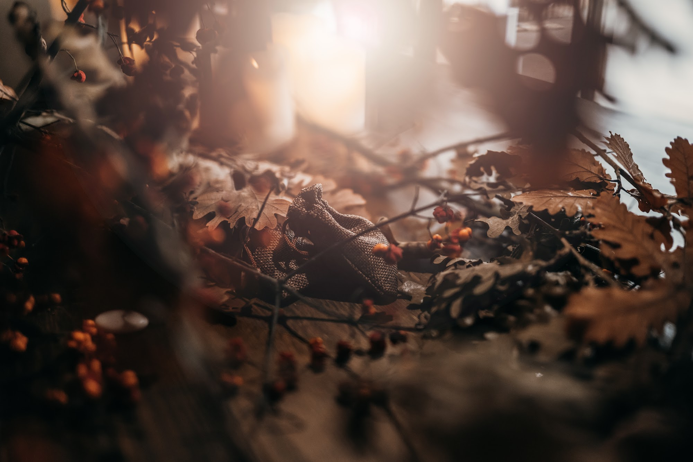
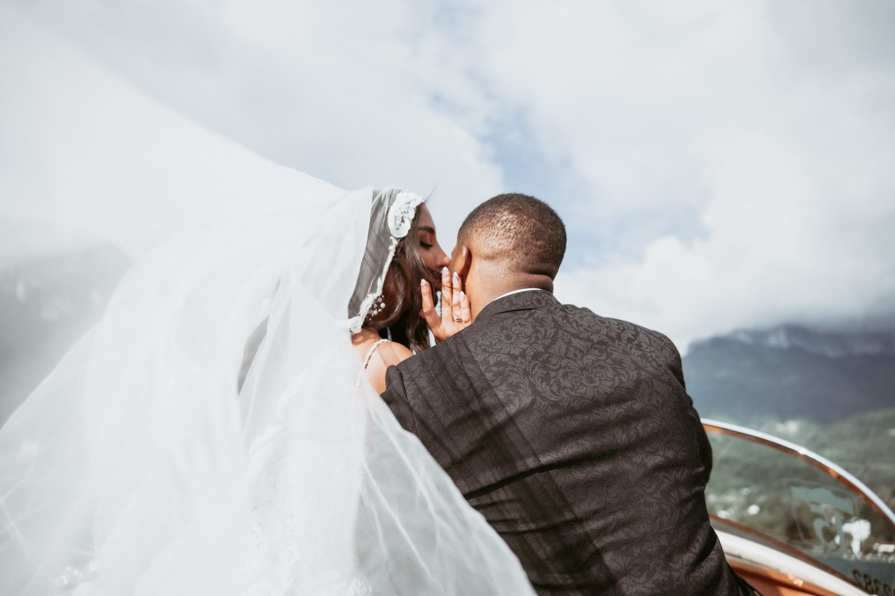
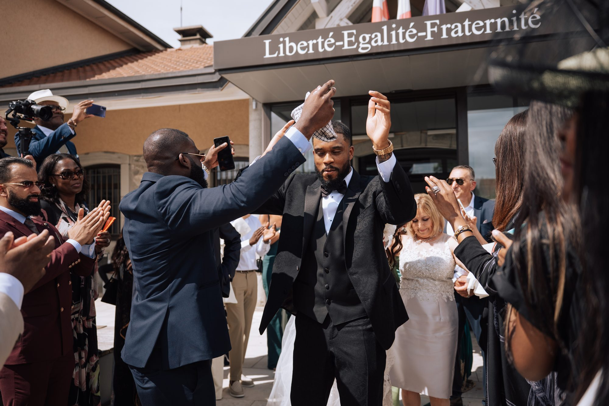

A destination wedding in the French Alps: the guide to getting married between lakes and mountains
A turquoise lake, peaks still capped with snow in June, light slowly fading behind the ridges: every year the French Alps draw couples from Lyon, Geneva and much further away. If you are planning a destination wedding in the French Alps, here is what I have learned photographing and filming weddings by the water and in the mountains: choosing the setting, the right season, the logistics, and how to plan the day around the most beautiful light.

Why so many couples choose the Alps
The Alps offer something rare: spectacular scenery less than two hours from Lyon and close to Geneva airport. Lake Annecy, Lake Bourget, the shores of Lake Geneva and the villages of Haute-Savoie are easy to reach, which makes travel simple for your guests while still feeling like a true escape.
For a photographer, it is an extraordinary setting. The water reflects the sky, the mountains give depth to every portrait, and the light changes hour by hour.
Lake, mountain or chalet: choosing your setting
A lakeside venue remains the classic choice. Hotels and estates on the shore let you move from ceremony to cocktail hour and dinner without travelling, with the water as a backdrop. A short boat ride between the ceremony and the cocktail hour is also a precious moment: you are finally alone, and the images are stunning.
Higher up, chalets and alpine meadows create a more intimate atmosphere, often for smaller weddings. Just check access: mountain roads, limited parking, and cable car schedules if the venue can only be reached by gondola.

The best season for a mountain wedding
From June to September the weather is usually at its best and the days are long. July and August are in high demand, so book your suppliers early. September is often my favourite month in the Alps: milder temperatures, quieter lakes and lower, more flattering light.
Keep in mind that late-afternoon storms are common in the mountains in summer. They usually pass quickly, but a ceremony time with some margin is wise. Winter has its own charm too, with snow and glowing chalets, but the days are short.

Practical points not to overlook
In France, a civil marriage takes place at the town hall of a municipality where one of you, or one of your parents, lives. If you dream of saying yes by the lake, a celebrant-led ceremony at the venue is often the best option, with the legal ceremony held beforehand. Check requirements with the town hall early, as paperwork can take time.
Plan accommodation and transport for your guests: a shuttle between the hotel and the venue saves a lot of stress on mountain roads at night. And always have a rain plan with a covered space for the ceremony and the cocktail hour.

Planning the day around the light
In the mountains, the sun disappears behind the ridges well before the official sunset time, so golden hour comes earlier than in the plains and does not always last long.
I recommend a short twenty to thirty minute couple session at the end of the day, during the cocktail hour or just before dinner. By a lake, the reflections and the pink sky give the strongest images of the day. If you have planned a boat ride, late afternoon is the ideal time.
My approach to weddings in the Alps
I photograph and film your day with discretion: I guide you for a few minutes for the portraits, then let you live your wedding. In a setting as powerful as the Alps, my job is to balance the landscape and the emotion, so your images tell your story as much as the place.
I am based near Lyon and travel throughout Savoie, Haute-Savoie and Isère, as well as all over France. I work in French and English.

Frequently asked questions
When is the best time to get married in the French Alps?
June to September for the weather and long days. September is an excellent compromise: still mild, quieter lakes and more beautiful light for photos.
Can we have a legal ceremony by the lake?
French civil marriages take place at the town hall where one of the couple or one of their parents lives. By the lake, you can hold a celebrant-led ceremony wherever you like.
Do we need a rain plan?
Yes. Mountain weather changes quickly, especially in summer with late-afternoon storms. A covered space for the ceremony and cocktail hour lets you enjoy the day whatever happens.
Do you travel to Annecy and Savoie?
Yes, I travel throughout the Alps and all over France. Travel and accommodation costs, if any, are clearly stated in the quote.
Planning your wedding in the French Alps, by a lake or in the mountains? Write to me to check my availability for your date.
Let’s talk about your project